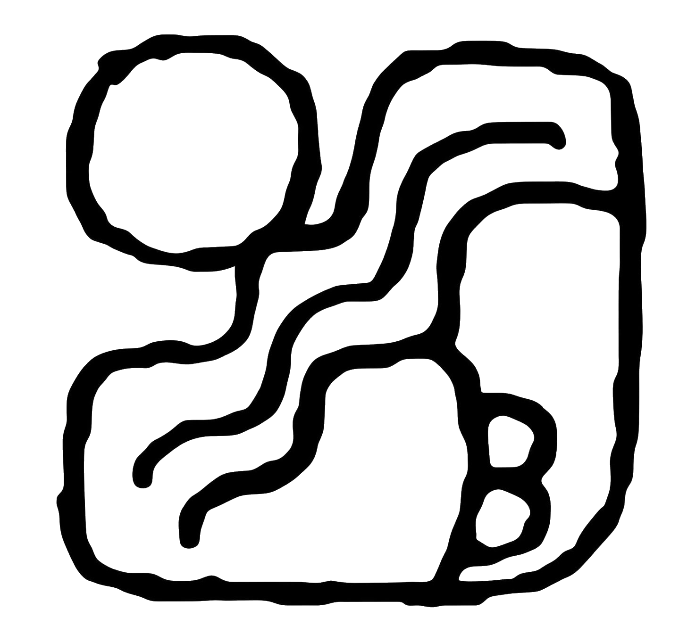

ule educativo
Un espacio para conocer, explorar y acercarte al juego de pelota mesoamericano. Reunimos información histórica, fuentes de consulta y colecciones visuales para comprender sus distintas expresiones, desde el pasado mesoamericano hasta su práctica contemporánea.
Explora el sitio
Artículos
Lecturas sobre la historia, arqueología, cultura y vigencia del juego de pelota mesoamericano.
Bibliografía
Libros, artículos y recursos web que sirven como fuentes para conocer y profundizar en el tema.
Colecciones
Explora colecciones visuales de piezas, espacios y otros elementos relacionados con el juego de pelota.
Un proyecto para aprender y explorar
El juego de pelota mesoamericano forma parte de una historia amplia y diversa. En este sitio encontrarás información sobre sus variantes, contextos históricos, evidencias arqueológicas y formas de práctica actuales.
El contenido busca ser claro y accesible, pero también ofrecer fuentes para que puedas profundizar, contrastar información y formarte tu propia perspectiva.